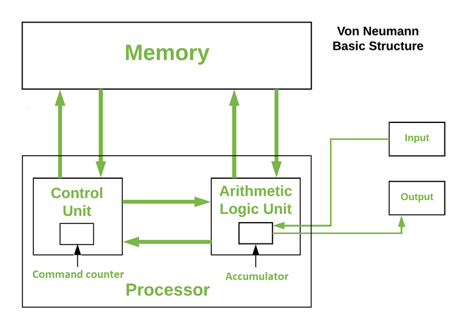

01 Машинна мова
Машинні команди
| Код | Адреса | Команда |
|---|
| 01 | NNNN | зчитати: скопіювати до суматора зміст комірки NNNN |
| 02 | NNNN | записати: зміст суматора скопіювати в комірку NNNN |
| 11 | NNNN | додати до суматора зміст комірки NNNN |
| 12 | NNNN | відняти від суматора зміст комірки NNNN |
| 13 | NNNN | помножити суматор на зміст комірки NNNN |
| 20 | NNNN | перейти до команди з адресом NNNN (занести в лічильник команд число NNNN) |
Програма є послідовністю машинних команд.
Один крок роботи процесора:
- виконати команду
, адреса якої знаходиться в лічильнику команд
- якщо команда не є переходом
, лічильник команд збільшити на 1
https://tss.co.ua/ML/Програмування
Задача 1. Скласти числа, що знаходяться в комірках 11 і 12. Суму зберегти в комірці 13
Задача 2. Обміняти місцями зміст двох комірок.
Команда присвоєння
Коли нам потрібно надати змінній нове значення,
ми пишемо команду присвоєння x = 5
Загальний вигляд команди присвоєння:
ім'я = вираз
Виконується команда у два кроки:
1) обчислюється вираз справа від знаку "=";
2) результат обчислення надається змінній зліва від знаку "=".
Устрій комп'ютера

Пам'ять - зберігає інформацію.
Процесор - виконує команди.
Пристрої введення і виведення - підтримують зв'язок із зовнішнім світом.